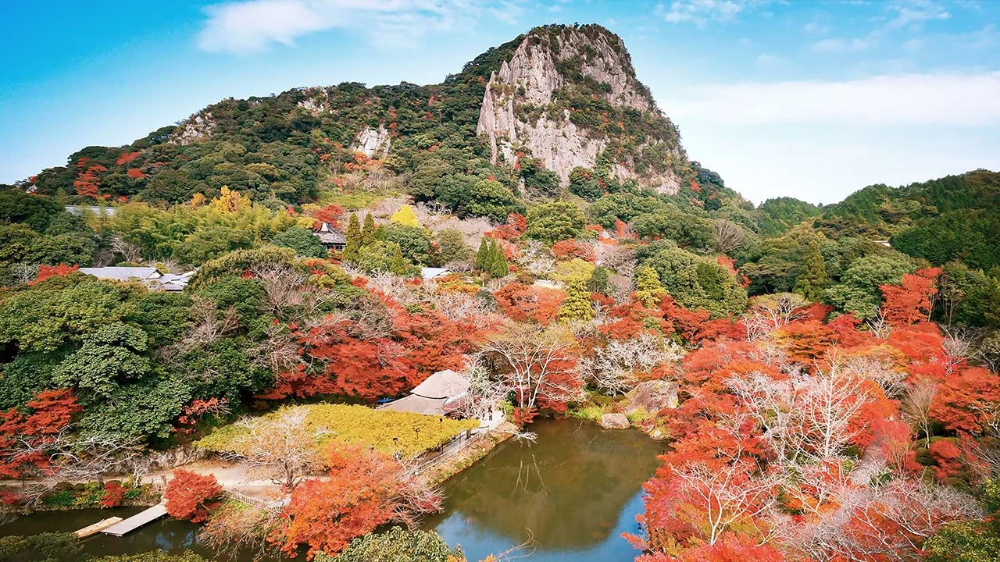
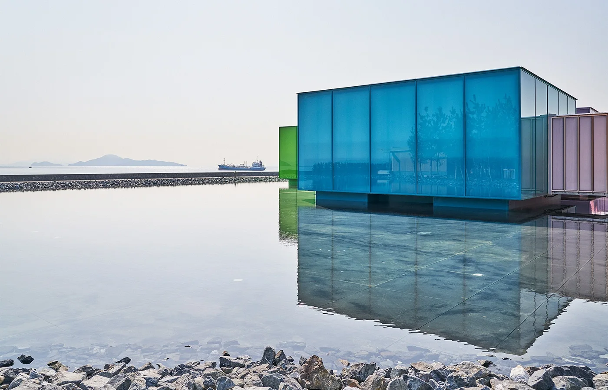
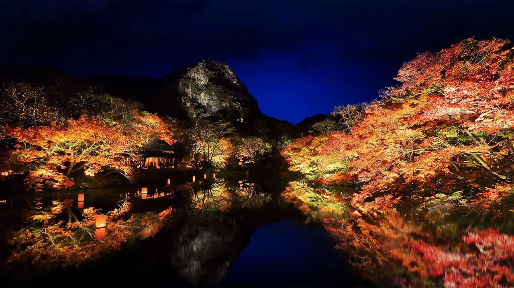

资料馆早晚时段
11/24 若选 07:30–08:30 或 17:30–18:30 入馆，须提前网购预约；日间通常可现场购票。
红叶、温泉与当代建筑。由香港飞抵广岛，沿九州南下，经福冈返港。
2026 年 · 深秋旅行
—
25 天 / 24 晚 / 7 处住宿

点选城市，查看停留与移动方式。
HIROSHIMA ↔ KYUSHU 路线示意 · 非比例地图
展开日期查看上午、下午与交通。
住宿城市与移动方式每天明确。
门票、车票与参观确认分开列出。
以下为规划要求，均不代表已经预订。
11/24 若选 07:30–08:30 或 17:30–18:30 入馆，须提前网购预约；日间通常可现场购票。
12/5 参观按官网提前一个月的规则预约。有空位可现场入馆，热门时段建议先订。
11/27 接九年庵包车、12/16 衔接 MOCA、12/17 衔接返港航班，优先确定车次与座位。
表中日期按 JR 通常规则：乘车日前一个月，日本时间 10:00（香港／中国时间 09:00）开售指定席。网络“事前申请”不等于已确保座位。普通列车的自由席通常不要求提前划位；如携带三边合计超过 160cm、250cm 以内的大件行李，需按所选新干线确认并预约对应行李席位，部分置物区试行例外不作为本行程默认安排。11/23 本行程只飞广岛，当天不乘 Nozomi。
从战后现代主义，到当代的木、玻璃与自然。
保留入内与看展时间，不止于外观打卡。

SIMOSE · SHIGERU BAN 建筑与图片来源 ↗
上午赏枫，午后温泉，入夜再看镜池。
把一整天留给展览、历史与和平公园的空间。观看丹下健三建筑时，也留出消化与安静行走的时间。
严岛神社、大圣院与红叶谷。依当天潮汐调整先后，保持岛内慢游，不安排另一座美术馆。
选择周五前往，连同仁比山神社预留约 3–4 小时。公开期截至 11 月 29 日；当日叶况以现场为准。
香港快运 UO822 / 国泰共享 CX5822
机场公布班表 · 未确认余票与预订
上午广岛 → 博多 → 福冈国际航站楼
选择下午或晚间航班，当日抵达香港。
地面跨城与国际航班分开购票，建议按新干线抵达博多至航班起飞预留至少 4–5 小时，并确认国际航站楼接驳。
福冈机场航班查询 ↗以下为用车建议，尚未询价或预订。
11 月 23 日为勤劳感谢日，当天只入住休息。宫岛、九年庵与御船山主要游览安排在工作日；周末仍可能遇到本地游客。
可考虑酒店间行李寄送；须先确认收件与时效，并随身携带至少两日用品。12/16 早班新干线回广岛，下午参观现代美术馆。
双语酒店名、图片、特点与五平台查询入口。统一人民币展示口径，未取得当前日期报价的项目明确留空。
打开住宿与比价与比价 ↗本页为旅行规划，交通时间为估算；机票、酒店、门票与包车均未预订。图片为历史参考，不代表 2026 年实时红叶状态。核对日期：2026 年 11 月 3 日。
查看改版前资料归档 ↗ · 下载旧版 ZIP ↓